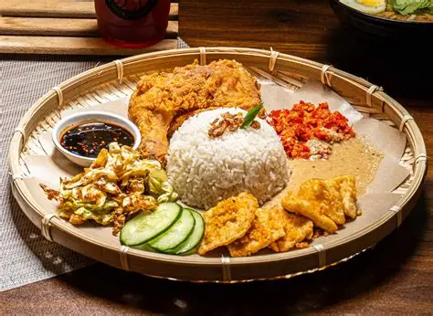

Ayam Gepuk Mas DD
Welcome to Ayam Gepuk Power. We serve Spicy and Delicious Chicken
for everyone. Our special sambal makes customers come back again.
Our Menu
- Ayam Gepuk Original
- Fried chicken with spicy sambal - RM8.00
- Ayam Gepuk Cheese
- Fried chicken with cheese sauce - RM10.00
- Nasi Tambah
- Extra rice - RM1.50
- Teh Ais
- Cold iced tea - RM2.00
How to Order
- Choose your menu.
- Place your order at the counter.
- Make payment.
- Wait for your food to be served.
Facilities
- Free WiFi
- Air-conditioned dining area
- Parking space
What Our Customers Say
"The chicken is crispy and the sambal is amazing!"

Contact Us
No.55 Jln Komersial Gangsa Jaya,
Pusat Komersial Dan Perindustrian Gangsa Durian Tunggal Melaka
Number phone: 017-508 9283
Visit
our Facebook for more information.